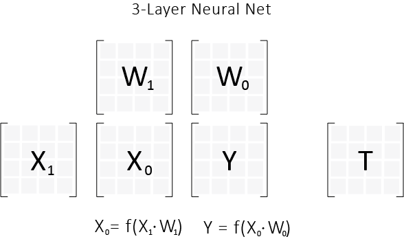

Background
So far we have learned about regression, which implies that we are trying to predict a real number. But how does our analysis change if we are trying to predict a class label? A class label is just an integer which represents a certain type of object. Take for example the Iris dataset. It looks like this
| Inputs | Outputs | |||||
|---|---|---|---|---|---|---|
| sepal length | sepal width | petal length | petal width | setosa | versicolor | virginica |
| 5.1 | 3.5 | 1.4 | 0.2 | 1 | 0 | 0 |
| 4.9 | 3.0 | 1.4 | 0.2 | 1 | 0 | 0 |
| 4.7 | 3.2 | 1.3 | 0.2 | 1 | 0 | 0 |
| 4.6 | 3.1 | 1.5 | 0.2 | 1 | 0 | 0 |
| 5.0 | 3.6 | 1.4 | 0.2 | 1 | 0 | 0 |
Let's start with the idea that we are trying to predict a binary class label (0 or 1) for each of the three output flower types.
Options
Good 'Ol Fashioned Linear Regression
We could run linear regression just like before with our squared error. Only this time, after our training is completely done, we check the values in $Y$. If a value in $Y$ is greater than 0.5, we map it to 1, and if it is less than 0.5 then we map the result to 0. This stinks for one main reason.
Problem
- It's hard to rationalize what we are doing. As we are training, we are generating results in $Y$ that are not necessarily between $[0,1]$. This means if our algorithm outputs some $y_{ij}$ that has value $2$, we are going to waste time updating weights in our matrix $W$, which will push $y_{ij}$ closer to 1 (even though we would be classifying it correctly).
Fix
This can be fixed if we first map our real numbered output to $[0,1]$, by way of some function. This is also nifty because we can interpret this number as a probability. This provides two major benefits.
Benefits
- If this algorithm is only one part of a machine learning pipeline/bigger software project, then interpreting our output $y_{ij}$ as a probability provides a common interpretation of the output. Now we can chain programs together, as we have some intuition about the outputs of our program.
- If management asks what the output of our algorithm represents, saying "probabilities!" sounds much more professional than "uhhh... numbers ($y_{ij}$) which we want to be close to other numbers ($t_{ij}$)".
So let's choose our favorite function that maps the real numbers $R$ onto $[0,1]$. For historical reasons people went with
$$f(x) = Sig(x) = \dfrac{1}{1+e^{-x}}$$
Linear Regression with Transform
After we dot $X \cdot W$, we then map each one of those real values into the range $[0,1]$, by use of our sigmoid function.
$$f(x) = Sig(x) = \dfrac{1}{1+e^{-x}}$$
And so $Y = Sig(X \cdot W)$. From here we can just use our squared error as the error function.
Problem
- Squared Error doesn't really make sense in the context of probabilities. Consider the following two scenarios. Let's say you feed an example row through your model and output a row of probabilities, $y_{row}$, that represents your predictions for a row of $T$, $t_{row}$. Let's say this row is of length 100, and that $t_{row}$ is the row of all 1's. Namely,
$$t_{row} = [1, 1, ..., 1]$$
Case 1:
Our output $y_{row}$ has the first element 0, and the rest are 1's. It looks like
$$y_{row} = [0, 1, 1, ..., 1]$$
The squared error between $y_{row}$ and $t_{row}$ is then $\dfrac{1}{2}$ (remember we divide squared error by 2).
Case 2:
Our output $y_{row}$ has .9 for all 100 of its values.
$$y_{row} = [.9, .9, ..., .9]$$
Then our squared error is $\dfrac{100*(.1)^2}{2} = \dfrac{1}{2}$. And so we have equivalent errors.
Issue
Our error function is indifferent to each of these two options. But are we?
Let's say we are predicting the binary values of $t_{row}$ from our $y_{row}$. Let's map everything above .5 to 1, and everything below .5 to 0. We see that in case 1, we only get 99 of our predictions right. Whereas in case 2, we get all 100 binary predictions correct. So it seems we have a preference for case 2. Is there a way to create a better error function that encompasses more of our intuition? Let's do just that.
Magical Error Function
So what do we want our magical error function to do? Well we want it to have the following properties. Before we begin though, let's denote our magical error function as $E$, and remember that it takes in two probabilities, $y_{ij}$ and $t_{ij}$.
- We want $E(t_{ij}, t_{ij}) = 0$
- We want $E(0, 1)$ to be large (that is as bad as it gets)
- We want it to somehow map case 2 to a lower error than case 1.
- Bonus points if we can make it cancel some of the added terms that our gradient has accumulated by our addition of the sigmoid to every element.
Squared Error Recap
Let's revisit our squared error function and gradient, so that we have some context before we go searching for the magical function $E$. I'm going to denote squared error as $SE$. We see that
$$SE(y_{ij}, t_{ij}) = \dfrac{1}{2} (y_{ij} - t_{ij})^2$$ $$\dfrac{dSE}{dy_{ij}} = (y_{ij} - t_{ij})$$
Magical Derivative
We know that $Y = Sig(X \cdot W)$. To make this even clearer, lets have $Z=X \cdot W$, so that there is no mixup between $Y$ and the dot product of $X \cdot W$. We see that $y_{ij} = Sig(z_{ij})$.
Writing out our expression for the total error, we see that
$$J = \dfrac{1}{m} \sum_{i,j} E(y_{ij}, t_{ij})$$ $$\dfrac{dJ}{dw_{ab}} = \dfrac{1}{m} \sum_{i,j} \dfrac{dE(y_{ij}, t_{ij})}{dy_{ij}}*\dfrac{dy_{ij}}{w_{ab}} = \dfrac{1}{m} \sum_{i,j} \dfrac{dE(y_{ij}, t_{ij})}{y_{ij}} * y_{ij}*(1-y_{ij})*x_{ia}$$
Great! But where did that term $y_{ij}*(1-y_{ij})$ come from? I remember that term $x_{ia}$ from when we took the derivative in linear regression link.
Let's zoom in on the derivative in question. Remember that $y_{ij} = Sig(z_{ij})$.
$$\dfrac{dy_{ij}}{dw_{ab}} = Sig^{'}(z_{ij}) * \dfrac{dz_{ij}}{dw_{ab}} = Sig^{'}(z_{ij}) * x_{ia}$$
where $j = b$. Remember that term $x_{ia}$ from our linear regression . Is there any way that we can simplify this further? Well, we can use the following relationship about $Sig$ to do just that.
Identities
$$Sig(x) = \dfrac{1}{1+e^{-x}}$$ $$Sig^{'}(x) = Sig(x)*(1-Sig(x))$$
From our previous expression, we can continue simplifying $$\dfrac{dy_{ij}}{dw_{ab}} = Sig^{'}(z_{ij}) * x_{ia} = Sig(z_{ij})*(1-Sig(z_{ij}))* x_{ia} = y_{ij}*(1-y_{ij})*x_{ia}$$
What is E?
So looking back at our original expression we see that
$$\dfrac{dJ}{dw_{ab}} = \dfrac{1}{m} \sum_{i,j} \dfrac{dE(y_{ij}, t_{ij})}{dy_{ij}} * y_{ij}*(1-y_{ij})*x_{ia}$$
Can we make the derivative of $E$ look like the $SE$ gradient (which is $(y_{ij} - t_{ij})$), and get rid of the pesky addition of $y_{ij}*(1-y_{ij})$?
Namely we want
$$\dfrac{dE(y_{ij}, t_{ij})}{dy_{ij}} = \dfrac{y_{ij} - t_{ij}}{y_{ij}*(1-y_{ij})}$$
Yes, we can! We are a simple integration away! Let's do that integration, and solve for $E$. We get
$$E = \int \dfrac{y_{ij} - t_{ij}}{y_{ij}*(1-y_{ij})} dy_{ij} = -(t_{ij}*log(y_{ij}) + (1-t_{ij})*log(1-y_{ij}))$$
Frankenstein's Monster
The thing you have just brought to life is called the "Cross Entropy". Denote it CE, and it looks like
$$CE(y_{ij}, t_{ij}) = -(t_{ij}*log(y_{ij}) + (1-t_{ij})*log(1-y_{ij}))$$
The Main Derivative
By plugging in our error function and allowing a bunch of things to cancel, we can calculate the main derivative.
$$\dfrac{dJ}{dw_{ab}} = \dfrac{1}{m} \sum_{i,j} \dfrac{y_{ij} - t_{ij}}{y_{ij}*(1-y_{ij})} * y_{ij}*(1-y_{ij})*x_{ia} = \dfrac{1}{m} \sum_{i,j} (y_{ij} - t_{ij})x_{ia}$$
Using the same trick as in the linear regression, we can convert this into
$$\dfrac{dJ}{dW} = \dfrac{1}{m}X^{T}(Y-T)$$
but this isn't identical to our linear regression update calculation because $Y$ is after the application of Sig.
$$W_{update} = -\alpha \dfrac{dJ}{dW} = -\dfrac{\alpha}{m}X^{T}(Y-T)$$
What have we done
Let's recap what we did. Given a dataset where we were trying to predict a binary class label (0 or 1), we created an algorithm that returns us a probability in the range $[0,1]$. This algorithm has 2 major differences from the linear regression that we created last week.
Differences
- In normal linear regression, $Y = X \cdot W$. In our algorithm, $Y = Sig(X \cdot W)$.
- Instead of using the squared error as our error function, we went with the cross-entropy error, which looks like
$$CE(y_{ij}, t_{ij}) = -(t_{ij}*log(y_{ij}) + (1-t_{ij})*log(1-y_{ij}))$$
We did this because we are comparing probabilities.
The model still looks like this
Creation
This thing that you have created is called "logistic regression". But the reality is, it doesn't matter what it is called, because you now understand how it was created. After that entire derivation, it should be obvious to you that this name is terrible. This algorithm performs classification, not regression.
For the remainder of this blog, and for the remainder of my life, I'm going to call this thing "Logistic Classification". Feel free to join me.
Interesting Ideas
When I write the expression $\dfrac{A}{B}$ for matrices $A$, and $B$, I am talking about the element-wise division of those matrices. If I wanted to multiply $A$, by the inverse of $B$, I would write $A \cdot B^{-1}$. Moreover, when I want to multiply two matrices together element-wise, I write either $AB$ or $A * B$. If I wanted to dot two matrices together I write it like $A \cdot B$.
In our post on linear regression, we created this rule called the Partial North. Does this rule work for logistic classification? We were able to write
$$\dfrac{dJ}{dW} = X^T \cdot \dfrac{dJ}{dY}$$
But what is $\dfrac{dJ}{dY}$ for Cross-Entropy Error? We know that
$$\dfrac{dCE(y_{ij}, t_{ij})}{dy_{ij}} = \dfrac{y_{ij} - t_{ij}}{y_{ij}(1-y_{ij})}$$
So every element of $\dfrac{dJ}{dY}$, must be that, so then
$$\dfrac{dJ}{dY} = \dfrac{1}{m} \dfrac{Y-T}{Y(1-Y)}$$
Hmm... But then it looks like our rule doesn't work because we would calculate
$$\dfrac{dJ}{dW} = X^T \cdot \dfrac{1}{m} \dfrac{Y-T}{Y(1-Y)}$$
And this is not what we got above. So what did we miss?
Chain Rule
If you look at the analysis above for the derivative of $J$, we realize that we are not computing the chain rule through the derivative of our Sig function. Take for example the sum in linear regression. It looks vaguely like this
Linear Regression Sum
- $$\sum_{i,j} (y_{ij} - t_{ij})x_{ia} =
- \sum_{i,j} \dfrac{dSE(y_{ij}, t_{ij}}{dy_{ij}x_{ia}$$
Eventually that $x_{ia}$ turns into our matrix $X^{T}$, and the derivative turns into $\dfrac{dJ}{dY}$.
In contrast the sum in logistic classification looks vaguely like
Logistic Classification Sum
$$\sum_{i,j} \dfrac{CE(y_{ij}, t_{ij})}{y_{ij}}y_{ij}*(1-y_{ij})x_{ia}$$
Well, it looks like that term $y_{ij}(1-y_{ij})$ is really the difference. We remember that this term is really $Sig^{'}(z_{ij})$. So what we realize is that we need to take the derivative of our $f^{'}$ and multiply it element-wise to each element.
If we think of this in matrix notation, we get the following.
$$\dfrac{dJ}{dY} * f^{'}(X \cdot W)$$
Note that $X \cdot W$ will generate the linear output of our model, which is $Z$ in our analysis above. Then we use the derivative of our function, and multiply that element-wise to $\dfrac{dJ}{dY}$.
Using what we have learned from this analysis, you can write the Generalized Partial North. It looks like
Generalized Partial North
If we have $Y = f(X \cdot W)$, then we know
$$\dfrac{dJ}{dW} = X^{T} \cdot \left(\dfrac{dJ}{dY} * f^{'}(X \cdot W) \right)$$
I'll show you how to use this rule, along with it's counterpart as we head into Neural Net territory.
Future
You derived a way above to compute the matrix of partials which are north of your current matrix of partials. Moreover, you can now use any function that you want (not just Sig), and it still works!
So you have figured out how to move your partials north in a generalized way, but how do you move them west, and why is that important? Don't worry we will derive this next rule soon, as we move into the twisted land of Neural Nets. What is a neural net, you ask? Neural nets are just generalizations of these models but with more internal matrices. A neural net with 2 internal matrices looks like this.
We'll get there.
Code
The time is nigh for you to take a crack at this function. I'm going to borrow most of the stuff from the linear regression with minor tweaks. Once we get this right, we are going to kick this machine learning stuff into high gear. Hope you are ready.
We are going to build this as an extension to our linear regression.
Here is the outline of our LogisticClassification.
class LogisticClassification:
def __init__(self, error_func=CrossEntropyError,
matrix_func= Sig, lr=0.1, n_iter=1000,
W=None, b = None):
...
def error(self, X, T):
...
def predict(self, X):
...
def update(self, X, T):
...
def fit(self, X,T):
...
I'm going to test our Logistic on the famous Iris dataset. It is easy to grab as it ships with the sklearn.datasets. See you space cowboy.